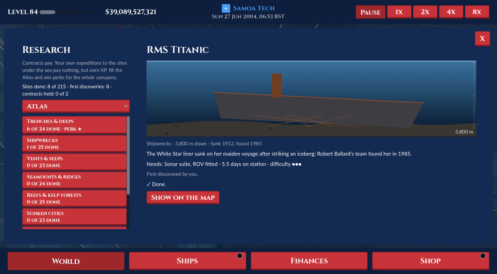

Research
Added or changed on 15 October 2026

- The seventh company type, Research.
- Two lines, five tiers each: Survey vessels (category survey: Survey Launch 150 m, Hydrographic Cutter 600 m, Coastal Research Ship 1,500 m, Ocean Survey Vessel 2,500 m, Global Research Vessel 4,000 m; 2 to 5 gear slots) and Deep-sea motherships (category mothership: Dive Support Vessel 3,000 m, ROV Mothership 4,500 m, Deep Submergence Tender 6,000 m, Expedition Mothership 8,000 m, Hadal Explorer 11,000 m; 2 to 6 slots). Prices $90,000 to $220M, slower than cargo ships, reaching 700 to 9,500 nm from port. Art: white houses forward, an orange stern A-frame, a yellow ROV, crewed subs in their cradles, a crane, and a helideck on the two biggest motherships; crews in hi-vis (survey) and oilskin orange (motherships). A skin in every pack (gravy boat and cornucopia, glove and helmet, ghost ship and cauldron, sled and sleigh).
- Gear (fitted in port into a ship's slots, a share of the ship's price; taken off for half back): Sonar suite (10%: needed to find wrecks and map the deeps; a fifth fewer days on station; reveals hidden sites nearby), ROV (15%), Crewed submersible (30%, motherships only: needed below 9,000 m; half again the research points), Ice hull (20%: polar sites; goes through sea ice without an icebreaker), Coring rig & wet lab (8%: vents, seeps, cold corals, sampling contracts), Dive team (5%: shallow wrecks, reefs and sunken cities to 60 m), Film crew (5%: documentaries pay half again; 10% more research points).
- 215 real sites in 9 categories: Trenches & deeps (24: Challenger Deep, Horizon Deep, Brownson Deep, Molloy Deep...), Shipwrecks (25: Titanic, Endurance, Erebus and Terror, the San Jose galleon, Antikythera...), Vents & seeps (23: Lost City, the Galapagos Rift, Beebe...), Seamounts & ridges (24), Reefs & kelp forests (25), Sunken cities (23: Pavlopetri, Thonis-Heracleion, Port Royal...), Aircraft & war relics (24: Truk Lagoon, Scapa Flow, Bismarck, USS Indianapolis, Air France 447...), Canyons, caves & blue holes (23) and Wildlife & mysteries (24: the Bloop, the Baltic Sea Anomaly, the Ogasawara giant squid...). 37 famous ones are known from the start; the rest show as search areas (a faint ring and "?", off the real spot) till revealed: a sonar ship on station within 450 nm, a site done within 450 nm, or a contract there. Each site's end of its lanes is "@res_SITE". A site needs a ship deep enough with its needs fitted (trenches sonar and an ROV, or a sub below 9,000 m; wrecks and relics sonar and divers to 60 m, else an ROV; vents an ROV and the lab; polar sites, beyond 66 N or 60 S, an ice hull).
- An expedition (the Research page, or the ship popup's Expeditions button): a docked research ship within its reach (and with the fuel there and back on a tank) is sent to a site; its route becomes its port, and once its stop is done it sets out. On station it burns 30% of its fuel burn and wears; a storm pauses the survey; each day of dives may fail (6% x (1.5 - maintenance): a day lost), and below 6,000 m a ship under 50% maintenance may lose its ROV or sub (12% a day; without the gear the site needs it turns home). It turns back early if short of fuel or hull to get home. Then it sails home and lies idle ("no expedition"). A ship can be called home, or moved to another port (its HQ, hubs or the 30 nearest within its reach) to set out from.
- Personal research pays nothing; contracts pay. The Contracts board is shared by every company, first come: 14 offers, new ones every 4 days, gone after 40 untaken. Kinds: Science & mapping (sites), Industry surveys (oil and gas fields and fishing grounds: cable, pipeline, wind farm and seabed surveys, sonar and sometimes the lab, 200 m), Salvage & recovery (wrecks, relics and ruins: 1.7x pay, 20% chance only a quarter is recovered), Documentary (famous sites, half again with a film crew) and Search (hidden sites). Clients are fictional (Halvorsen Institute of Oceanography, Tidewater Cable Co., Brass Bell Salvage, Blue Depths Films...). Pay: 3% of the price of the cheapest research ship that could do it, a day, for its days on station plus 8, x the kind x difficulty (so a contract pays back about a fifth of that ship). Taken, it's due in 30 days plus twice its days; a company holds 2 plus one for every two research ships. Missed or given up, it fails: no pay, 10% of it as a penalty, and the rating notices.
- Perks: each category's at 25%, 50% and 100% of its sites done: Trenches crew wages -5/10/20%, Shipwrecks breakdowns -10/20/35%, Vents fuel -4/8/15%, Seamounts speed +2/4/8%, Reefs catch +10/20/35%, Sunken cities port fees -10/20/35%, Relics repairs -10/20/35%, Canyons wear -5/10/20%, Wildlife sale prices +2/4/8%. Local ones: +25% catch on fishing grounds within 400 nm of a surveyed wreck, reef, seamount or relic, and every site done within 350 nm of a port counts as a sight for its Expedition cruises.
- The Research rating's four parts, a quarter each: Contracts (done on time against failed, and how many), Discoveries, Fleet & gear (maintenance and gear slots filled), Safety & reliability (failed dives, lost gear, breakdowns and losses against dives).
- Site pictures are drawn from each category's template with the site's own details, seeded by its id. The map's Research switch shows the known sites as diamonds in their category's colour (gold-edged and ticked once done, ringed where a ship is bound) and the hidden ones' search areas; clicking one opens its card. A discovery shows a card (FIRST DISCOVERY or DISCOVERY) with its picture and fact. Shop cards show depth (and how many sites it reaches) and gear slots. Finances rows: Research contracts, Research gear, Contract penalties. Three tutorial tips (Into the deep, Gear and expeditions, Paid work).
- Multiplayer: the board and first discoveries are the host's (sent with each update); sending, recalling, moving, fitting, taking and giving up are host commands; discoveries and mishaps go to their ship's player.
- Industry surveys at oil and gas fields don't yet unlock or cheapen rig slots (planned).